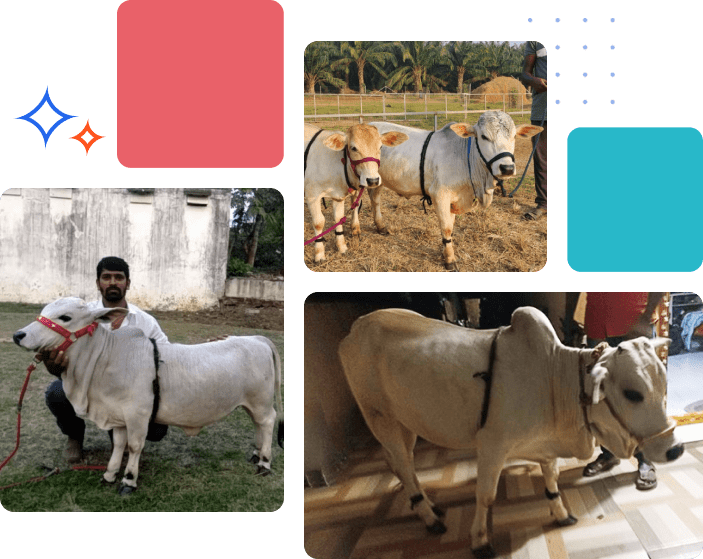

Welcome the Punganur Cow
into Your Home
A Unique and Loving Pet
Discover why families and animal lovers are choosing the rare Punganur cow as their companion.
Learn More About Punganur CowsDownload the Ultimate Guide to Punganur Cows as Pets
Get your guide to learn

Why punganur cows make great pets for your home or farm.

Simple care tips for keeping them happy and healthy.

Stories of families who found joy in this gentle breed.
Stories of families who found joy in this gentle breed.
Stories of families who found joy in this gentle breed.

Why Choose the Punganur Cow Your as Pet?
- Loving and Gentke Nature: Punganuru cows are calm and affiectionate.
- Low Maintenance: Easy to care for, even in small family.
- Unique and Rare Breed: A special addition to your family.
- Cultural Significance: A connection to Indian heritage.
- Eco-Friendly Companion: Helps promote sustainable living.
Meet the Punganur Cow Family

Mr. John
Our Vastu solutions don't come out of a box ready to plug and play. We pride ourselves on identifying the client challenges quicklr minimal disruption.

Mr. John
Our Vastu solutions don't come out of a box ready to plug and play. We pride ourselves on identifying the client challenges quicklr minimal disruption.

Mr. John
Our Vastu solutions don't come out of a box ready to plug and play. We pride ourselves on identifying the client challenges quicklr minimal disruption.
Mr. John
Our Vastu solutions don't come out of a box ready to plug and play.We pride ourselves on identifying the client challenges quicklr minimal disruption.
Mr. John
Our Vastu solutions don't come out of a box ready to plug and play. We pride ourselves on identifying the client challenges quicklr minimal disruption.
Frequently Asked Questions
Can I Keep a Punganur Cow in my Backyard?
Punganur cows are native to the Chittoor district of Andhra Pradesh. They were once facing extinction, but their numbers have increased due to the Mission Punganur project.
What does a Punganur Cow eat?
Punganur cows are native to the Chittoor district of Andhra Pradesh. They were once facing extinction, but their numbers have increased due to the Mission Punganur project.
Are Punganur Cows safe around kids and pets?
Punganur cows are native to the Chittoor district of Andhra Pradesh. They were once facing extinction, but their numbers have increased due to the Mission Punganur project.
How do i get a Punganur Cow?
Punganur cows are native to the Chittoor district of Andhra Pradesh. They were once facing extinction, but their numbers have increased due to the Mission Punganur project.
About Petsfolio
The Punganur is a traditional breed of the Chitoor
District of Andhra Pradesh in southern India. The
breed name may derive from its association in the
past with the Rajahs of Punganur, or from the
name of the town itself. It is reared mainly in hill
country, at up to 1500 m above sea level.

Contact-us
+91 7660 966 660
3-6-327 & 328, Third Floor,Doshi Chambers,
Himayathnagar,Beside Police Commissioner Office,
Hyderabad - 500029
Follow us